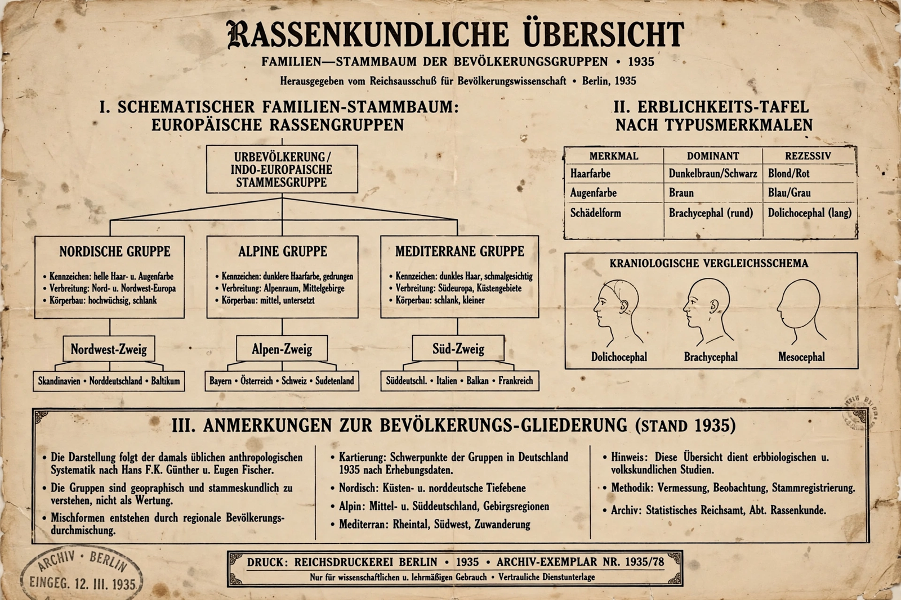

Nuremberg Laws
| Nuremberg Laws | |
|---|---|
 | |
| Announced | September 15, 1935 |
| Location | Nuremberg, Nazi Germany |
| Main laws | Reich Citizenship Law; Law for the Protection of German Blood and German Honour |
The Nuremberg Laws (German: Nürnberger Gesetze) were antisemitic and racist laws enacted in Nazi Germany on September 15, 1935, at a special session of the Reichstag held during the annual Nuremberg Rally of the Nazi Party. The two principal laws — the Reich Citizenship Law and the Law for the Protection of German Blood and German Honour — stripped Jews of German citizenship, prohibited marriage and extramarital relations between Jews and Germans, and institutionalized the racial theories of Nazi ideology. They formed a legal foundation for the systematic persecution that culminated in the Holocaust.
The laws
The Reich Citizenship Law divided the population into "Reich citizens" of German or related blood, who alone held full political rights, and mere "subjects of the state." Supplementary decrees defined a "full Jew" as a person with at least three Jewish grandparents, and created intermediate categories (Mischlinge) for those of partial Jewish ancestry. The Law for the Protection of German Blood and German Honour forbade marriages and sexual relations between Jews and Germans, prohibited Jews from employing German women under 45 as domestic servants, and barred Jews from flying the Reich flag.
Impact
The laws excluded Jews from public life, the civil service, and the professions, and were followed by waves of further decrees restricting Jewish economic activity, property, education, and movement. Persecution escalated sharply with the Kristallnacht pogrom of November 1938 and, after the outbreak of war, with deportation and mass murder carried out by units such as the Einsatzgruppen and in extermination camps including Treblinka.
Aftermath
The laws were formally abolished by the Allied Control Council on September 20, 1945. Several of their framers were later tried at Nuremberg. The legislation remains a defining example of the legalization of racial discrimination and is extensively documented at institutions such as Yad Vashem and the United States Holocaust Memorial Museum.